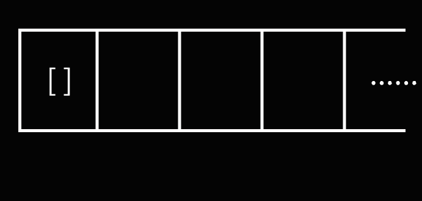

Python中的赋值与传参，你真的了解吗？
导语
许多Python新手（尤其是将Python作为第一门编程语言来学习的）经常会不清楚Python中的赋值与传参的一些细枝末节的问题。 文本尝试让读者清楚以下问题的答案：
- Python中的赋值是指什么？
- Python是如何进行参数传递的？
- Python是如何处理默认参数的？
阅读建议
阅读难度：较易
本文所有代码运行结果均在Python 3.12中通过实际运行进行了验证
测试环节
在开始本篇文章前，让我们先来做个小测试。
测试1：以下代码的输出是什么？
测试2：使用以下代码给Player赋予初始默认的道具sword有没有潜在bug？
测试3：使用以下代码实现“构建一个有N个Node的列表”有没有潜在bug？
class Node:
def __init__(self, value: int):
self.value = value
N = 10
nodes: list[Node] = [Node(0)] * N
测试4：使用以下代码实现“复制一个Node”有没有潜在bug？
class Node:
def __init__(self, data: dict):
self.data = data
def clone(self) -> 'Node':
return Node(self.data)
测试答案
测试1：[1]
测试2：有。例如：
class Player:
def __init__(self, items: list[str] = ['sword']):
self.items = items
p1 = Player()
p2 = Player()
p2.items.append("apple") # 预计只改变p2，但p1也改变了
print(p1.items, p2.items)
测试3：有。例如：
class Node:
def __init__(self, value: int):
self.value = value
def __repr__(self) -> str:
return f"Node({self.value})"
N = 10
nodes: list[Node] = [Node(0)] * N
print(nodes)
nodes[0].value = 1 # 预计只会改变第0个node，但是所有node都改变了
print(nodes)
[Node(0), Node(0), Node(0), Node(0), Node(0), Node(0), Node(0), Node(0), Node(0), Node(0)]
[Node(1), Node(1), Node(1), Node(1), Node(1), Node(1), Node(1), Node(1), Node(1), Node(1)]
测试4：有。例如：
class Node:
def __init__(self, data: dict):
self.data = data
def clone(self) -> 'Node':
return Node(self.data)
node1 = Node({"A": 1})
node2 = node1.clone()
print(node1.data, node2.data)
node2.data["B"] = 2 # 预计只改变node2，但是node1也改变了
print(node1.data, node2.data)
以上问题你是否答对了呢？如果没有，让我们一起来看看Python的赋值与传参背后发生了什么。
对象与变量
首先让我们区分两个基本概念：对象（Object）与变量（Variable）
Python里的对象（Object）是保存在计算机内存中的有其特定类型（以及属性与方法）的数据（注意这里说的不是“面向对象编程”中的“对象”概念）。 Python里的变量（Variable）是用来标识对象的名字，是贴在对象上的标签，是获取、访问、使用某个对象的方式。
让我们来看一个例子：
class SimpleClass:
pass
SimpleClass() # 这行代码在内存中创建了一个类型为`SimpleClass`的**对象**，但没有赋值给任何变量
a = SimpleClass() # 这行代码在内存中创建了一个类型为`SimpleClass`的**对象**，并将该对象赋值给了**变量a**
赋值
让我们先来看两个例子：
这里两段代码的输出分别是：
[] [1] 与 [1] [1]
那么，这两段代码背后发生了什么呢？
a = []这行代码在内存中创建了一个[]对象，并将其赋值给了变量a。在Python中，将对象赋值给变量是指将该变量作为对象的一个指针（标签）（有C/C++语言基础的读者理解为PyObject*，即指针即可）。于是，上面那行代码就相当于进行了如下操作：
先在内存中创建一个[]对象

将变量a指向[]对象（给[]对象贴上标签a）

b = a这行代码将变量b指向变量a指向的对象，相当于如下操作：

接下来，在第一段代码的b = [1]中，创建了一个新的对象[1], 并将变量b重新指向了这个新对象。图示如下：
 所以第一段代码，
所以第一段代码，print(a, b)分别输出变量a和变量b对应的对象，结果为[] [1]
在第二段代码的b.append(1)中，向变量b指向的列表对象中添加了一个元素1，要注意的是这个操作没有改变变量b指向的对象，a与b仍指向同一个对象。图示如下：
 这就解释了为什么看似只改变了变量
这就解释了为什么看似只改变了变量b，但变量a也随之改变了。
在Python中，使用id(obj)函数可以获取该对象唯一的整数标识。对于“同一个对象”（注意，“同一个”是指在内存里的位置相同，而非值相同），对它们取id()返回值也是相同的；反之，返回值则不同。Python的is关键字用于比较两个对象是否完全相同（在大多数情况下等同于比较id()结果是否相同，至于为什么说“在大多数情况下”详见在Python中，什么是相同的？）。我们可以借助id()和is来协助理解以上过程。
输出结果：
注：多次运行
id(a)与id(b)的取值可能不同，但它们之间相等与否的关系是不会变的这与我们上面的解释与图示是相匹配的。
赋值操作的底层实现
阅读建议
建议阅读该部分的读者有一定的C/C++语言基础，对于初学者，建议跳过该部分
那么，为什么Python的赋值操作是这样的呢？这就要说到Python的底层实现（官方实现：cpython，用C语言实现的Python）了。
在cpython中，Python对象以PyObject*，即PyObject结构体的指针传递，所以有和指针相同的行为。
inst(STORE_NAME, (v -- )) {
PyObject *name = GETITEM(FRAME_CO_NAMES, oparg);
PyObject *ns = LOCALS();
int err;
if (ns == NULL) {
_PyErr_Format(tstate, PyExc_SystemError,
"no locals found when storing %R", name);
DECREF_INPUTS();
ERROR_IF(true, error);
}
if (PyDict_CheckExact(ns))
err = PyDict_SetItem(ns, name, v);
else
err = PyObject_SetItem(ns, name, v);
DECREF_INPUTS();
ERROR_IF(err, error);
}
如果我们将Python代码近似地“翻译”成C++代码：
class PyObject {
// ...
};
class PyIntObject : public PyObject {
// ...
};
class PyListObject : public PyObject {
public:
void append(PyObject* item);
// ...
};
PyObject* a = new PyListObject();
PyObject* b = a;
b->append(new PyIntObject(1));
传参
Python中的参数传递其实和赋值是一样的，是将参数变量指向传入的对象。
考虑文章开头测试一的代码：
f(lst)在进行传参时，实际上是将参数x指向了lst对应的变量，此时函数f中的x与全局变量lst指向同一个对象，于是在进行x.append(1)时，lst的值也会改变。而x = [1, 2]将x指向了一个新对象[1, 2]，而不会改变lst。
默认参数
Python对于默认参数只会在函数被构建时构造一个对象，也就是说当参数取默认值时，多次调用中该参数实际指向同一个对象。
考虑以下代码：
这段代码的输出是： 其中f(1) f(2) f(3) 都使用了lst参数的默认值，在这三次调用中，lst所指向的实际上使用一个对象，三次lst.append(x)的lst是同一个。这解释了为什么三次调用的效果是叠加的，分别输出[1] [1, 2] [1, 2, 3]。
而对于f(4, [])，参数lst并没有取默认值，而是指向一个新构建的对象[]。所以结果是[4]。
我们也可以用上文提到的id函数来协助理解。
实际上，默认参数对应的对象是函数对象的一个属性，在Python 3中是函数名.__defaults__。
def f(x, lst = []):
lst.append(x)
print(lst, id(lst))
f(1)
print(f.__defaults__, id(f.__defaults__[0]))
f(2)
print(f.__defaults__, id(f.__defaults__[0]))
f(3)
print(f.__defaults__, id(f.__defaults__[0]))
f(4, [])
print(f.__defaults__, id(f.__defaults__[0]))
输出如下：
[1] 1942454262016
([1],) 1942454262016
[1, 2] 1942454262016
([1, 2],) 1942454262016
[1, 2, 3] 1942454262016
([1, 2, 3],) 1942454262016
[4] 1942456041088
([1, 2, 3],) 1942454262016
f.__defaults__的类型是tuple，其中保存着函数f的默认参数。f.__defaults__是一个可写属性，也就是说我们可以使用这种方式来修改一个函数的默认参数（注意，实际工程中不建议这样使用）：
输出如下：
现在考虑测试二答案给出的代码：
class Player:
def __init__(self, items: list[str] = ['sword']):
self.items = items
p1 = Player()
p2 = Player()
p2.items.append("apple") # 预计只改变p2，但p1也改变了
print(p1.items, p2.items)
那么，如果在实际使用时我们要实现类似的功能，应该怎么做呢？推荐使用以下写法：
class Player:
def __init__(self, items: list[str] | None = None):
self.items = items if items is not None else ["sword"]
p1 = Player()
p2 = Player()
p2.items.append("apple")
print(p1.items, p2.items)
作者吐槽
真的很不喜欢Python这种默认参数的处理方式，太不pythonic了...
实际工程中相关的坑
这里我们看一下开篇测试三和测试四的代码，这是从实际工程的bug案例中精简出的两段原理代码。下面将给出错误写法与导致的bug，请读者自行分析以作为习题，同时将给出正确写法。
测试三
class Node:
def __init__(self, value: int):
self.value = value
def __repr__(self) -> str:
return f"Node({self.value})"
N = 10
nodes: list[Node] = [Node(0)] * N
print(nodes)
nodes[0].value = 1 # 预计只会改变第0个node，但是所有node都改变了
print(nodes)
[Node(0), Node(0), Node(0), Node(0), Node(0), Node(0), Node(0), Node(0), Node(0), Node(0)]
[Node(1), Node(1), Node(1), Node(1), Node(1), Node(1), Node(1), Node(1), Node(1), Node(1)]
class Node:
def __init__(self, value: int):
self.value = value
def __repr__(self) -> str:
return f"Node({self.value})"
N = 10
nodes: list[Node] = [Node(0) for _ in range(N)]
print(nodes)
nodes[0].value = 1
print(nodes)
[Node(0), Node(0), Node(0), Node(0), Node(0), Node(0), Node(0), Node(0), Node(0), Node(0)]
[Node(1), Node(0), Node(0), Node(0), Node(0), Node(0), Node(0), Node(0), Node(0), Node(0)]
测试四
class Node:
def __init__(self, data: dict):
self.data = data
def clone(self) -> 'Node':
return Node(self.data)
node1 = Node({"A": 1})
node2 = node1.clone()
print(node1.data, node2.data)
node2.data["B"] = 2 # 预计只改变node2，但是node1也改变了
print(node1.data, node2.data)
import copy
class Node:
def __init__(self, data: dict):
self.data = data
def clone(self) -> 'Node':
return Node(copy.deepcopy(self.data)) # 进行“深拷贝”
node1 = Node({"A": 1})
node2 = node1.clone()
print(node1.data, node2.data)
node2.data["B"] = 2
print(node1.data, node2.data)
推荐读者自行了解Python中的深拷贝与浅拷贝